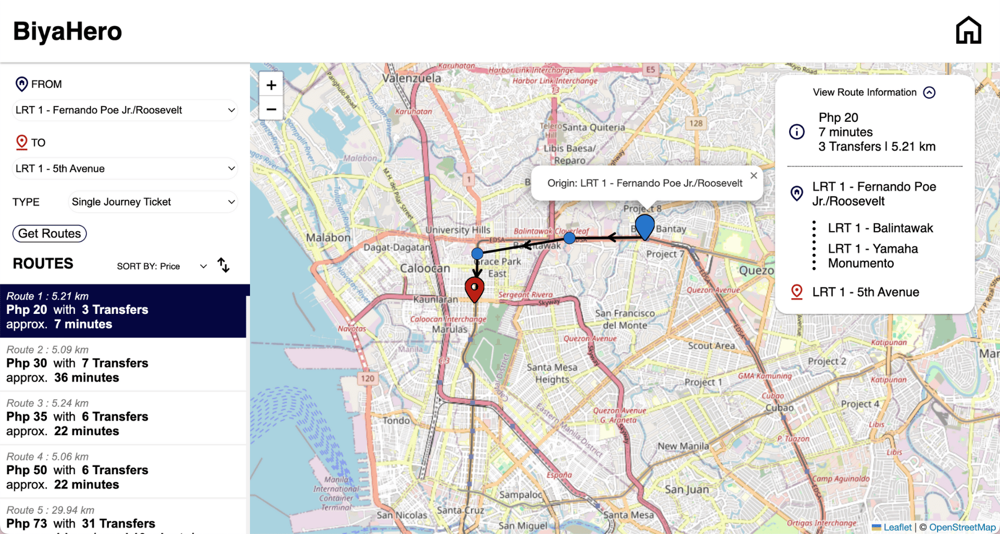
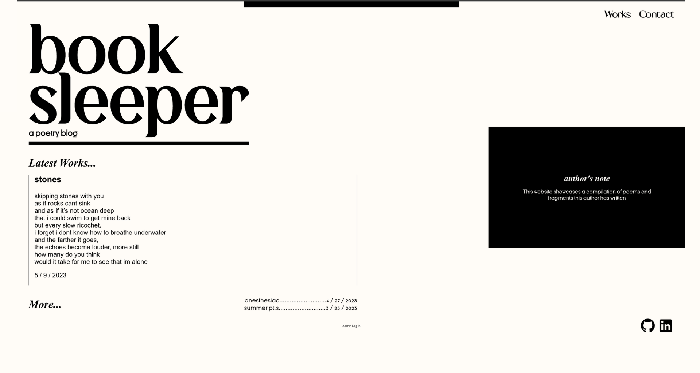
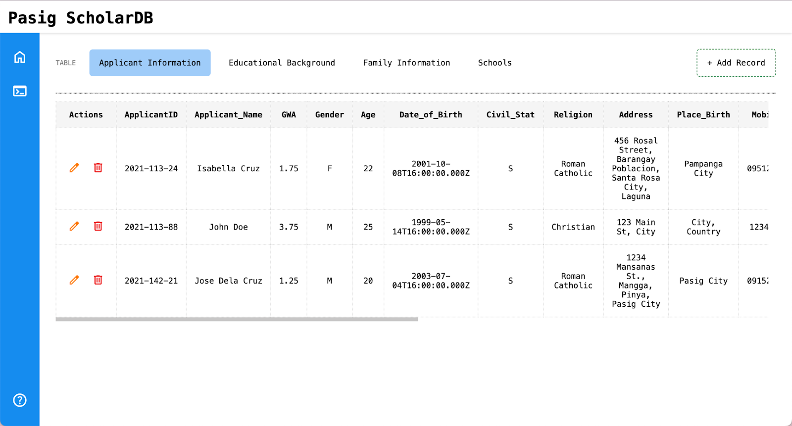
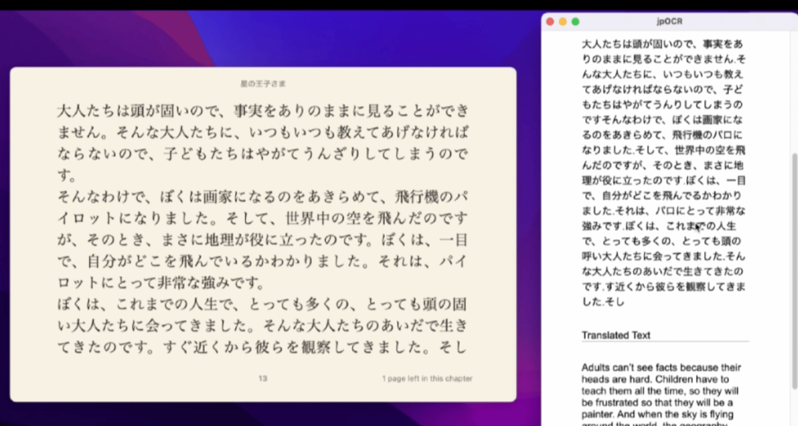

Hello Visitor !
I'm Ylana Ong,
a 3rd year Computer Science student at the Polytechnic University of the Philippines Manila learning about Web Development
Experience
-
Software QA Intern ⸻ PurpleBug Inc., Makati | Oct, 2023 - Jan, 2024
- Conducted black-box testing to evaluate and ensure web and mobile application usability and overall quality through manual testing, practicing consistent attention to detail
- Wrote more than 95 bug reports with detailed documentation for developers’ efficient issue resolution
- Accomplished various research, documentation, and automation tasks, assisting the rest of the team
My Projects
-
This website
I built this website to learn more about different AWS services.
-

DFS Route Calculator - "BiyaHero"

Worked with a team to develop a web application which calculates all the routes from a source to a target destination in the Philippine Railway System and EDSA Carousel System utilizing the DFS algorithm.
-

Fullstack Blog - "booksleeper, a poetry blog"
Built and designed a full-stack blog website hosted on an AWS EC2 instance with admin authentication using JSON Web Token to access a Management System to handle post creation, modification, and deletion through a REST API.
-

Database Manager - "Pasig ScholarDB"
Worked with a team to develop a database system based on the Pasig City Scholarship Renewal form to store applications and provide centralized storage.
-

OCR Translator - "jpOCR"
Built an application which recognizes Japanese text from a user-selected desktop window using an OCR engine and translates it to English.